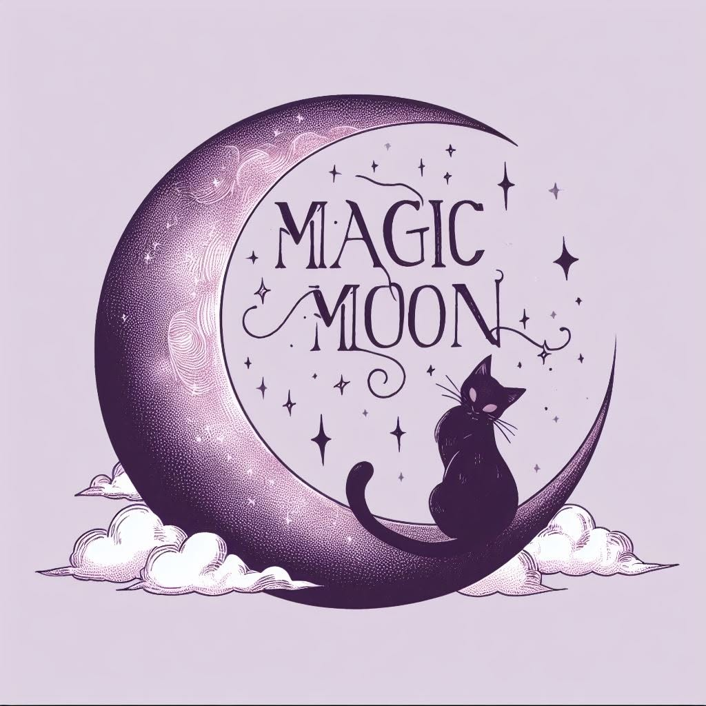
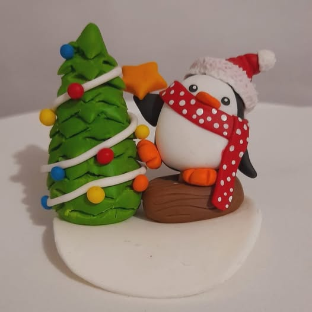
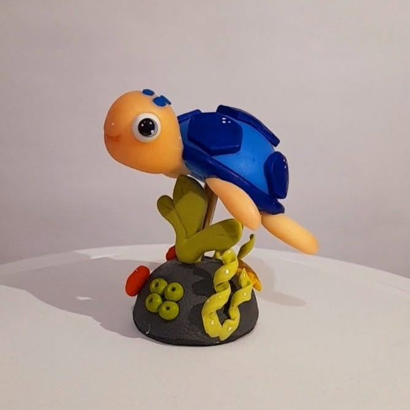

Figuras personalizadas
Retratos en miniatura de personas, parejas o mascotas, con la expresión, ropa y accesorios que tú elijas. Ideales para regalar algo único de 6 a 12 cm.
Cotización según diseñoPorcelanicrón hecho a mano
Creamos piezas en porcelana fría de 6 a 15 cm, tiernas y llenas de detalle, pensadas para regalar, coleccionar o decorar tu pastel favorito.
Ver servicios
Somos un pequeño emprendimiento dedicado a moldear porcelana fría a mano, figura por figura. Cada pieza nace de un boceto, se trabaja con paciencia y se pinta al detalle para que quepa en la palma de tu mano y en tu corazón.
Trabajamos por encargo, así que cada figura puede ajustarse a lo que estés celebrando: un cumpleaños, una mascota, una pareja o simplemente un capricho tierno para ti.
Retratos en miniatura de personas, parejas o mascotas, con la expresión, ropa y accesorios que tú elijas. Ideales para regalar algo único de 6 a 12 cm.
Cotización según diseñoFiguras temáticas para coronar tortas y cupcakes: personajes, números, animalitos o escenas pequeñas a la medida de tu evento.
Cotización según diseñoDetalles con nombre, fecha o mensaje para cumpleaños, aniversarios, baby showers y otras ocasiones que merecen algo hecho a mano.
Cotización según diseño
